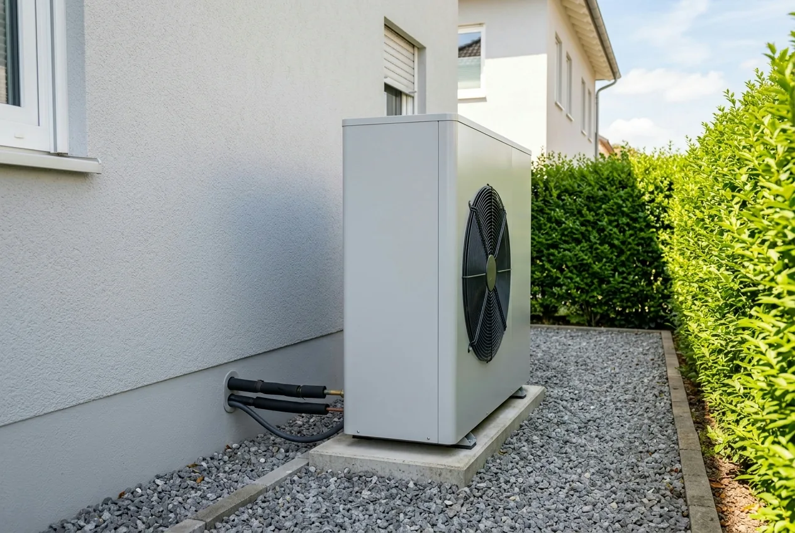
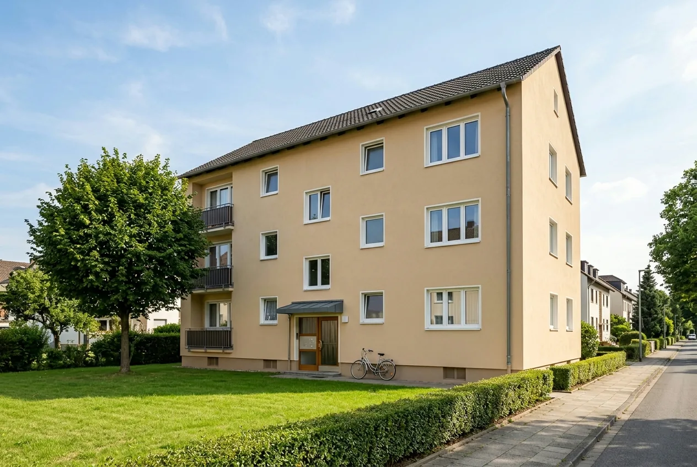
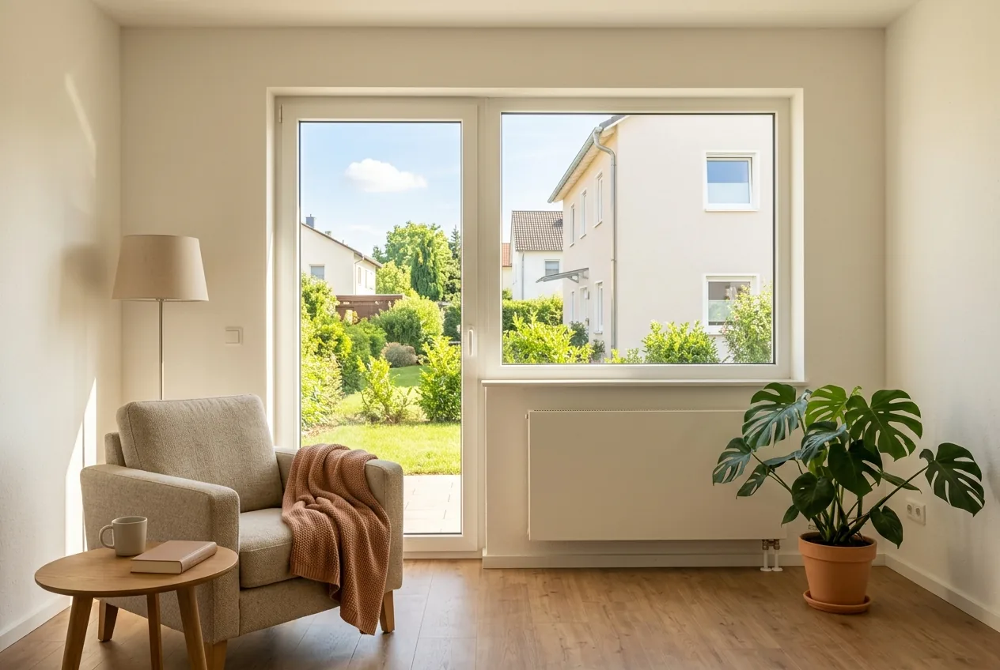

Inhaltsverzeichnis
Das Wichtigste in Kürze
- Stichtag 21. Juli 2026: Maßgeblich ist das Datum der Antragstellung, nicht der Einbau. Anträge davor werden nach den alten Bedingungen behandelt.
- Was sinkt: Klimageschwindigkeitsbonus von 20 auf 16 Prozent, förderfähige Höchstkosten beim Heizungstausch von 30.000 auf 28.000 Euro. Der Effizienzbonus ist ersatzlos entfallen, der Emissionsminderungszuschlag als Pauschale, emissionsmindernde Maßnahmen fördert stattdessen das BAFA als Heizungsoptimierung mit 50 Prozent.
- Was steigt: Der Einkommensbonus erreicht jetzt 40 Prozentpunkte, und der Fördersatz darf bis 80 Prozent gehen, bei einem zu versteuernden Haushaltsjahreseinkommen bis 30.000 Euro.
- Für Familien: Mindestens ein kindergeldberechtigtes Kind unter 18 senkt das anzusetzende Einkommen einmalig um 10.000 Euro, unabhängig von der Zahl der Kinder.
- Höchstbetrag: 22.400 Euro Zuschuss für die erste Wohneinheit (80 Prozent von 28.000 Euro) bei Antragstellung bis zum 31. Januar 2027.
- Nicht abgeschafft: Die 65-Prozent-Regel des Gebäudeenergiegesetzes gilt weiter. Das beschlossene Gebäudemodernisierungsgesetz ist noch nicht verkündet.
Was die BEG-Reform 2026 ist, und warum sie Sie betrifft
Seit dem 21. Juli 2026 gelten neue Bedingungen für die Bundesförderung für effiziente Gebäude. Ein Teil der Berichterstattung spricht von Kürzung, das Bundeswirtschaftsministerium selbst nennt die Reform sozialer, effizienter und fokussierter. Beides beschreibt denselben Vorgang von zwei Seiten.
Rechtsgrundlage sind die Richtlinie BEG Einzelmaßnahmen und die Richtlinie BEG Wohngebäude, beide vom 17. Juli 2026 und in Kraft seit dem 21. Juli 2026. KfW und BAFA haben ihre Merkblätter zum selben Stichtag umgestellt. An der Zuständigkeit ändert sich nichts: Für den Heizungstausch ist seit 2024 die KfW zuständig (Programm 458), für Maßnahmen an der Gebäudehülle, an der Anlagentechnik und für die Heizungsoptimierung das BAFA. Beide Töpfe gehören zur BEG, werden aber getrennt beantragt.
Verschoben wurde vor allem Geld: weg von Boni, die unabhängig vom Einkommen wirkten, hin zu Haushalten mit geringem Einkommen und zu Familien. Ob Sie gewinnen oder verlieren, hängt deshalb an zwei Größen, Ihrem zu versteuernden Haushaltsjahreseinkommen und dem Datum Ihrer Antragstellung.
Alt gegen Neu: alle Änderungen in einer Tabelle
Die Tabelle stellt die Regeln vor und seit dem Stichtag gegenüber; sie gilt, wo nicht anders vermerkt, für die KfW-Heizungsförderung der ersten Wohneinheit. In der mittleren Spalte nennen wir nur amtlich belegbare Werte.
| Position | bis 20.07.2026 | seit 21.07.2026 |
|---|---|---|
| Grundförderung Heizungstausch | bestand bereits | 30 % der förderfähigen Gesamtkosten, für alle Heiztechniken |
| Klimageschwindigkeitsbonus | 20 % | 16 %, ab 01.02.2027 halbjährlich sinkend |
| Einkommensbonus | bestand bereits, aber nicht in der heutigen Staffelung | dreistufig: 40 / 30 / 10 Prozentpunkte je nach zvE |
| Familienzuschlag | bestand bereits, Ausgestaltung aber anders | senkt das anzusetzende Einkommen einmalig um 10.000 Euro |
| Effizienzbonus | 5 % | ersatzlos entfallen |
| Emissionsminderungszuschlag | 2.500 Euro | als Pauschale entfallen; stattdessen Heizungsoptimierung mit 50 % über das BAFA |
| Förderfähige Höchstkosten (1. Wohneinheit) | 30.000 Euro | 28.000 Euro, ab 01.02.2027 halbjährlich −750 Euro |
| Obergrenze des Fördersatzes | 70 % | 70 %; 80 % bei zvE bis 30.000 Euro (40.000 Euro mit Familienzuschlag) |
| Obergrenze bei Einzelmaßnahmen | pauschal 70 % | ebenfalls 70 bzw. 80 % nach denselben Grenzen |
Am häufigsten falsch dargestellt wird der Deckel. Er hängt allein vom zu versteuernden Haushaltsjahreseinkommen ab: Bis 30.000 Euro sind 80 Prozent möglich, darüber 70 Prozent. Lebt mindestens ein minderjähriges, kindergeldberechtigtes Kind im Haushalt, wird das anzusetzende Einkommen einmalig um 10.000 Euro reduziert, die 80-Prozent-Grenze verschiebt sich damit auf 40.000 Euro. Dieser Familienzuschlag wird nur ein einziges Mal gewährt, unabhängig von der Zahl der Kinder, nicht je Kind.
In Euro heißt das für ein Einfamilienhaus: 80 Prozent von 28.000 Euro sind 22.400 Euro, der derzeit höchstmögliche Zuschuss für die erste Wohneinheit. Es ist eine Beispielrechnung; einen absoluten Euro-Deckel nennen weder Richtlinie noch Merkblatt.

Was Sie jetzt tun sollten: je nach Antragsstatus
Fall 1: Ihr Antrag war vor dem 21. Juli 2026 gestellt
Wer seinen Antrag vor dem 21. Juli 2026 gestellt hat, wird noch nach den alten Konditionen behandelt, auch wenn die Entscheidung erst danach fällt. Bereits erteilte Zusagen behalten ihre Gültigkeit; die Bundesmittel dafür sind reserviert.
Noch in Prüfung befindliche Anträge sagt die KfW zu, wenn bei Antragstellung eine vollständige und korrekte Bestätigung vorlag. Sie müssen nichts tun, und sollten einen laufenden Antrag keinesfalls zurückziehen.
Fall 2: Sie haben eine Bestätigung zum Antrag, aber noch nicht beantragt
Hier greift der Bestandsschutz nicht. Maßgeblich ist der Zeitpunkt der Antragstellung, nicht der Tag der Bestätigung. Wer heute beantragt, bekommt 16 statt 20 Prozent Klimageschwindigkeitsbonus und 28.000 statt 30.000 Euro Höchstkosten, je nach Einkommen aber auch einen höheren Bonus und Deckel. Für Haushalte mit niedrigem Einkommen ist das neue Paket besser.
Ob eine vor der Reform ausgestellte Bestätigung weiterverwendet werden kann, klären Sie mit dem Aussteller, beim Heizungstausch darf das ein Energieeffizienz-Experte oder der Fachbetrieb sein. Beim BAFA müssen ab dem 21. Juli 2026 neue Bestätigungs-IDs erzeugt werden; sie sind dort auf maximal zwei Monate befristet. Die KfW nennt für die Bestätigung zum Antrag (BzA) keine ausdrückliche Gültigkeitsdauer, klären Sie die Frist mit Ihrem Energieeffizienz-Experten.
Und: Unterschreiben Sie jetzt keinen unbedingten Vertrag. Ein unbedingter Vertragsschluss oder Baubeginn vor der Antragstellung gilt als Vorhabenbeginn und schließt die Förderung aus.
Fall 3: Sie haben noch gar nichts unternommen
Dann planen Sie von Anfang an nach den neuen Regeln. Die Reihenfolge ist entscheidend und durch die Reform unverändert: Angebot einholen, Bestätigung zum Antrag erstellen lassen, einen Liefer- oder Leistungsvertrag mit aufschiebender oder auflösender Bedingung schließen, wirksam erst mit der Zusage, und dann im KfW-Kundenportal beantragen. Gebaut wird erst nach der Zusage; dafür bleiben 36 Monate.
Ob eine Position förderfähig ist, entscheidet die Leistungsbeschreibung des Handwerkers, nicht das Antragsformular. Das prüfen wir, bevor Sie unterschreiben. Den Weg durch das Portal beschreibt der Beitrag zur Heizungsförderung KfW 458.
Gewinner und Verlierer der Reform
Die Reform verteilt um. Das lässt sich benennen, ohne sie zu bewerten.
Wer mehr bekommt
- Haushalte mit geringem Einkommen: Bis 30.000 Euro zvE beträgt der Einkommensbonus 40 Prozentpunkte, und der Fördersatz darf bis 80 Prozent reichen. Vorher war bei 70 Prozent Schluss.
- Familien: Ein Haushalt mit 38.000 Euro zvE und einem Kind unter 18 rutscht durch den Familienzuschlag von 30 auf 40 Prozentpunkte Einkommensbonus und zugleich vom 70- auf den 80-Prozent-Deckel: bei 28.000 Euro förderfähigen Kosten rechnerisch 2.800 Euro mehr. Ein zweites Kind ändert daran nichts.
- Wer Einzelmaßnahmen beantragt: Bei Dämmung, Fenstern und Anlagentechnik lag die Obergrenze früher pauschal bei 70 Prozent, jetzt sind bis zu 80 Prozent möglich, allerdings nur bei einem zu versteuernden Haushaltsjahreseinkommen bis 30.000 Euro und in der Praxis selten erreichbar.
Wer weniger bekommt
- Selbstnutzer mit alter Heizung: Der Klimageschwindigkeitsbonus fiel von 20 auf 16 Prozent und sinkt ab Februar 2027 weiter.
- Wer bisher den Effizienzbonus einplante: Die 5 Prozent für bestimmte Wärmequellen sind entfallen. Solche Anlagen bleiben technisch sinnvoll, bringen aber keinen Aufschlag mehr.
- Biomasse-Interessenten: Der pauschale Emissionsminderungszuschlag von 2.500 Euro ist gestrichen; emissionsmindernde Maßnahmen fördert stattdessen das BAFA als Heizungsoptimierung mit 50 Prozent.
- Alle mit teurem Vorhaben: Die förderfähigen Höchstkosten der ersten Wohneinheit sanken von 30.000 auf 28.000 Euro, bei gleichem Fördersatz eine kleinere Bemessungsgrundlage.
- Wer über den Sanierungskredit KfW 261 finanziert: Die KfW spricht von pauschal zehn Prozentpunkten weniger Tilgungszuschuss; mit Erneuerbaren-Energien-Klasse sind es faktisch 15, weil zusätzlich der Bonus für diese Klasse entfällt. Bei Effizienzhaus 85 EE und 70 EE liegt der Tilgungszuschuss jetzt bei null Prozent.
Beide Deutungen lassen sich belegen: Wer auf Klimageschwindigkeitsbonus, Effizienzbonus und Höchstkosten schaut, sieht eine Kürzung; wer auf Einkommensbonus, Familienzuschlag und die 80-Prozent-Grenze schaut, eine Umverteilung nach unten. Entscheidend ist nicht das Etikett, sondern in welcher Gruppe Sie stehen.
Welche Förderung gilt für Ihr Vorhaben?
Wir rechnen Ihren möglichen Fördersatz nach den seit dem 21. Juli 2026 geltenden Regeln durch und sagen Ihnen, worauf es in Ihrem Angebot ankommt.
Kostenlose Erstberatung sichernHeizungstausch und Wärmepumpe: was die KfW jetzt zahlt
Seit der BEG-Reform vom 21. Juli 2026 setzt sich der Heizungszuschuss so zusammen: 30 Prozent Grundförderung, dazu ein Klimageschwindigkeitsbonus von 16 Prozent und ein Einkommensbonus von 10 bis 40 Prozent. Der frühere Effizienzbonus von 5 Prozent und der Emissionsminderungszuschlag von 2.500 Euro sind entfallen. Insgesamt sind maximal 70 Prozent möglich, und 80 Prozent für selbstnutzende Eigentümer mit einem zu versteuernden Haushaltsjahreseinkommen bis 30.000 Euro.
Eine Beispielrechnung: Einfamilienhaus, selbstgenutzt, eine 22 Jahre alte Gasheizung wird gegen eine Luft-Wasser-Wärmepumpe getauscht, förderfähige Kosten 28.000 Euro, Antrag zwischen dem 21. Juli 2026 und dem 31. Januar 2027. Bei einem zvE über 60.000 Euro ergeben 30 plus 16 Prozent einen Zuschuss von 12.880 Euro. Bei einem zvE bis 30.000 Euro wären es rechnerisch 86 Prozent, gedeckelt auf 80 Prozent also 22.400 Euro. Fehlt demselben Haushalt mit einem zvE über 60.000 Euro auch noch der Klimageschwindigkeitsbonus, weil die Gasheizung erst zwölf Jahre alt ist, bleiben 30 Prozent, 8.400 Euro. Die Prozentsätze stammen aus den amtlichen Unterlagen, die Euro-Beträge sind daraus abgeleitet.
Wie sich der Zuschuss für weitere Haushaltskonstellationen errechnet, zeigt das Rechenbeispiel zur Wärmepumpen-Förderung 2026. Ob eine Wärmepumpe technisch zu Ihrem Gebäude passt, klärt davon unabhängig die raumweise Heizlastberechnung, die wir für Sie erstellen.
Die Boni im Überblick: Klimageschwindigkeit, Einkommen, Familie
Den Klimageschwindigkeitsbonus erhalten nur selbstnutzende Eigentümerinnen und Eigentümer und nur für die selbstgenutzte Wohneinheit. Er setzt den Austausch einer funktionstüchtigen Altanlage voraus: bei Öl-, Kohle-, Gas-Etagen- und Nachtstromspeicherheizungen unabhängig vom Alter, bei Gas- und Biomasseheizungen erst, wenn die Inbetriebnahme mindestens 20 Jahre zurückliegt (Stichtag: Antragstellung). Die alte Heizung muss fachgerecht demontiert und entsorgt werden.
Der Einkommensbonus ist seit der Reform dreistufig; es gilt immer nur eine Stufe, und auch er setzt Selbstnutzung voraus.
| Zu versteuerndes Haushaltsjahreseinkommen | ohne Kind unter 18 | mit mindestens einem kindergeldberechtigten Kind unter 18 |
|---|---|---|
| bis 30.000 Euro | 40 % | 40 % |
| 30.001 – 40.000 Euro | 30 % | 40 % |
| 40.001 – 50.000 Euro | 10 % | 30 % |
| 50.001 – 60.000 Euro | kein Bonus | 10 % |
| ab 60.001 Euro | kein Bonus | kein Bonus |
Die rechte Spalte zeigt die Wirkung des Familienzuschlags: Er verschiebt nicht den Bonus, sondern das Einkommen, mit dem gerechnet wird. Voraussetzung ist mindestens ein Kind, das im Haushalt mit Haupt- oder alleinigem Wohnsitz gemeldet, bei Antragstellung noch keine 18 Jahre alt und kindergeldberechtigt ist.
Ausführlich behandeln wir beide unter Einkommensbonus und Familienzuschlag 2026. Warum das Antragsdatum über mehrere tausend Euro entscheidet, steht beim Klimageschwindigkeitsbonus und seiner Degression, der Überblick über alle Bonus-Änderungen unter Heizungsförderung 2026.

Dämmung, Fenster und Gebäudehülle: was beim BAFA gilt
Bei den Einzelmaßnahmen an der Gebäudehülle hat die Reform die Fördersätze nicht angetastet. Für Dämmung, Fenster und außenliegenden sommerlichen Wärmeschutz gilt weiterhin ein Grundfördersatz von 15 Prozent, ebenso für Anlagentechnik außerhalb der Heizung und für die Heizungsoptimierung zur Effizienzverbesserung; die Heizungsoptimierung zur Emissionsminderung wird mit 50 Prozent gefördert, ebenso Fachplanung und Baubegleitung. Zuständig ist jeweils das BAFA. Neu ist die Obergrenze: Die 70 beziehungsweise 80 Prozent gelten jetzt auch hier, bei Dämmmaßnahmen meist wirkungslos, weil 15 Prozent plus 5 Prozentpunkte iSFP-Bonus die Grenze gar nicht erreichen.
Der iSFP-Bonus hat dagegen eine neue Hürde: Die 5 Prozentpunkte gibt es nur bei einem förderfähigen Mindestinvestitionsvolumen von 30.000 Euro brutto und nur für die Ausgaben oberhalb der Höchstgrenze ohne Sanierungsfahrplan. Das amtliche Beispiel: Bei 40.000 Euro Investitionskosten wird der Bonus nur für 10.000 Euro gewährt. Der Fahrplan muss bereits bei Antragstellung vorliegen.
Der viel zitierte Bonus für besonders ineffiziente Gebäude greift bei Einzelmaßnahmen noch nicht: 5 Prozentpunkte, aber erst ab dem 1. Quartal 2027 und ausschließlich für Dämmmaßnahmen an Außenwänden, Dachflächen, Geschossdecken und Bodenflächen, nicht für Fenster oder sommerlichen Wärmeschutz. Mehr dazu in unserem Artikel zur Dämmförderung 2026 und dem WPB-Bonus.
Kredite: Ergänzungskredit 358/359 und Sanierungskredit 261
Der Ergänzungskredit 358/359 besteht unverändert fort; sein Merkblatt gilt ausdrücklich ab dem 21. Juli 2026. Der Kreditbetrag liegt weiterhin bei bis zu 120.000 Euro je Wohneinheit und deckt bis zu 100 Prozent der förderfähigen Kosten. Voraussetzung ist eine zugesagte, aber noch nicht ausgezahlte Zuschussförderung, die nicht älter als zwölf Monate ist; die Zinsverbilligung des Produkts 358 zusätzlich ein zvE von höchstens 90.000 Euro. Konkrete Zinssätze nennen wir nicht. Die KfW legt sie am Tag der Zusage fest.
Beim Sanierungskredit 261 wurde dagegen deutlich gekürzt. Die Tilgungszuschüsse betragen seit dem 21. Juli 2026 für Effizienzhaus 40 EE noch 10 Prozent, für Effizienzhaus 55 EE und Denkmal EE jeweils 5 Prozent und für Effizienzhaus 70 EE sowie 85 EE null Prozent. Der frühere Bonus für die Erneuerbaren-Energien-Klasse ist entfallen; sie ist jetzt Grundvoraussetzung jeder geförderten Stufe. Der Bonus für serielle Sanierung bringt weiterhin 15 Prozentpunkte für Effizienzhaus 40 EE und 55 EE; für 70 EE sind es 5 Prozentpunkte, die in der Richtlinie verankert, nach Angaben der KfW aber voraussichtlich erst ab Ende September 2026 beantragbar sind.
Eine Meldung sollten Sie einordnen können: Dass der Förderhöchstbetrag auf 150.000 Euro je Wohneinheit steige, ist für die meisten kein Gewinn. Diesen Betrag gab es mit Erneuerbaren-Energien- oder Nachhaltigkeitsklasse bereits vorher. Welcher Weg günstiger ist, zeigt KfW oder BAFA im Vergleich; zur Kombination von Zuschuss und Kredit siehe Wärmepumpe finanzieren mit KfW-Kredit.

Ausblick: was sich 2027 und danach ändert
Ab dem 1. Quartal 2027 ändert sich für Wärmepumpen die Systematik: Die Grundförderung sinkt von 30 auf 15 Prozent, gleichzeitig kommt ein neuer Wertschöpfungs-Bonus von 15 Prozentpunkten für Wärmepumpen mit Ursprung in der EU hinzu. Für ein EU-Gerät bleibt es damit rechnerisch bei 30 Prozent, für Geräte ohne EU-Ursprung halbiert sich die Grundförderung. Ebenfalls ab dem 1. Quartal 2027 greift der neue WPB-Bonus von 5 Prozentpunkten für Dämmmaßnahmen an besonders ineffizienten Gebäuden. Die Richtlinie nennt für all das kein taggenaues Datum, sondern nur „ab Quartal 1 2027".
Darin liegt die Unsicherheit: Ob der 1. Januar oder der 1. Februar 2027 gemeint ist, lässt sich aus der Richtlinie nicht ableiten. Wer die Regelung sicher nutzen oder ihr zuvorkommen will, sollte den Antrag bis Ende 2026 stellen. Ab demselben Zeitpunkt entfällt außerdem die Förderung für einen neuen Wärmeerzeuger, wenn das Gebäude bereits mit einer seit dem 1. Januar 2008 in Betrieb genommenen Anlage versorgt wird.
Klar terminiert sind dagegen die Degressionen. Maßgeblich ist immer der Zeitpunkt der Antragstellung, nicht der Einbau.
| Antragstellung im Zeitraum | Klimageschwindigkeitsbonus | Förderfähige Höchstkosten (1. WE) |
|---|---|---|
| 21.07.2026 – 31.01.2027 | 16 % | 28.000 Euro |
| 01.02.2027 – 31.07.2027 | 12 % | 27.250 Euro |
| 01.08.2027 – 31.01.2028 | 8 % | 26.500 Euro |
| 01.02.2028 – 31.07.2028 | 4 % | 25.750 Euro |
| ab 01.08.2028 | entfällt | 25.000 Euro, weiter sinkend bis 22.000 Euro ab 01.08.2030 |
Ab dem 1. Januar 2028 werden zudem nur noch Wärmepumpen mit natürlichen Kältemitteln gefördert; die Richtlinie gilt bis Ende 2030.
Heizungsgesetz: Was GEG und GModG derzeit wirklich vorschreiben
Rechtlich gilt weiterhin das Gebäudeenergiegesetz mit der 65-Prozent-Regel des § 71 GEG. Die Übergangsfrist für Bestandsgebäude in Gemeinden mit mehr als 100.000 Einwohnern wurde allerdings vom 30. Juni 2026 auf den 31. Oktober 2026 verlängert; in kleineren Gemeinden läuft sie bis zum 30. Juni 2028. Parallel hat der Bundestag am 10. Juli 2026 das Gebäudemodernisierungsgesetz (GModG) beschlossen, das § 71 GEG und die 65-Prozent-Vorgabe streichen soll; der Bundesrat ließ das Gesetz passieren. Verkündet ist es zum Redaktionsschluss noch nicht, bis zur Verkündung im Bundesgesetzblatt bleibt die geltende Rechtslage unverändert.
Praktisch heißt das: Wer heute eine Heizung einbaut, muss die geltenden Vorgaben des Gebäudeenergiegesetzes einhalten. Ein Verkündungstermin für das GModG ist nicht bekannt, weshalb wir kein Inkrafttretensdatum nennen.
Zwei Verwechslungen sind verbreitet. Verschoben wurde die Übergangsfrist im Gebäudeenergiegesetz, nicht die Frist für die kommunale Wärmeplanung, die unverändert gilt. Und die 65-Prozent-Anforderung des GEG hat nichts mit der Erneuerbaren-Energien-Klasse beim Sanierungskredit 261 zu tun.
Was für Ihr Gebäude gilt, hängt von Gemeindegröße, örtlicher Wärmeplanung und Vorhaben ab. Dieser Beitrag ersetzt keine Rechtsberatung im Einzelfall.
Fazit: Was Sie aus der Reform mitnehmen sollten
Die BEG-Reform ist weder ein Förderstopp noch eine reine Verbesserung. Sie verschiebt Geld zu Haushalten mit geringem Einkommen und zu Familien, und baut über die Degression einen Zeitdruck auf, den es vorher nicht gab.
Drei Punkte sind entscheidend. Erstens: Maßgeblich ist das Datum der Antragstellung, wer den Klimageschwindigkeitsbonus in voller Höhe und die Höchstkosten von 28.000 Euro sichern will, muss bis zum 31. Januar 2027 beantragt haben. Zweitens: Rechnen Sie mit Ihrem tatsächlichen zu versteuernden Haushaltsjahreseinkommen, nicht mit dem Brutto. Drittens: Ein unbedingt geschlossener Vertrag vor dem Antrag kostet die gesamte Förderung.
Wenn Sie ohnehin tauschen oder dämmen wollten, ändert die Reform nur die Höhe und den günstigsten Zeitpunkt. Wir prüfen Handwerker-Angebote auf Förderfähigkeit, bevor Sie unterschreiben, erstellen die raumweise Heizlastberechnung für die Dimensionierung der Wärmepumpe und begleiten den Antragsweg bis zum Nachweis, herstellerneutral und tagesaktuell.
Stand der Angaben (25. Juli 2026)
Die hier genannten Fördersätze, Höchstkosten und Fristen stammen aus der Richtlinie BEG EM vom 17. Juli 2026, in Kraft seit dem 21. Juli 2026, sowie aus den zum selben Stichtag aktualisierten Merkblättern von KfW und BAFA. Die Fundstelle der Richtlinie im Bundesanzeiger ist zum Redaktionsschluss noch nicht zitierfähig, und das vom Bundestag am 10. Juli 2026 beschlossene Gebäudemodernisierungsgesetz ist noch nicht im Bundesgesetzblatt verkündet. Die Gesetzeslage ist also in Bewegung. Die Förderung steht zudem unter dem Vorbehalt verfügbarer Haushaltsmittel; ein Rechtsanspruch besteht nicht. Dieser Beitrag ersetzt keine Rechtsberatung im Einzelfall. Welche Konditionen für Ihr Vorhaben konkret gelten, prüfen wir gern tagesaktuell für Sie.
Kurz und direkt beantwortet
Die folgenden Fragen beantworten wir bewusst in wenigen Sätzen. Jede Antwort steht für sich und ist ohne den übrigen Text verständlich.
Was hat sich am 21. Juli 2026 bei der BEG-Förderung geändert?
Seit dem 21. Juli 2026 gelten die Richtlinien BEG Einzelmaßnahmen und BEG Wohngebäude vom 17. Juli 2026. Die wichtigsten Änderungen: Der Klimageschwindigkeitsbonus sank von 20 auf 16 Prozentpunkte, die förderfähigen Höchstkosten für den Heizungstausch von 30.000 auf 28.000 Euro. Der Effizienzbonus von 5 Prozent und der pauschale Emissionsminderungszuschlag von 2.500 Euro entfielen. Neu ist die Obergrenze von 80 Prozent für selbstnutzende Eigentümer mit geringem Einkommen; sie gilt jetzt auch für Einzelmaßnahmen.
Ist die 65-Prozent-Pflicht beim Heizungstausch abgeschafft?
Nein. Rechtlich gilt weiterhin das Gebäudeenergiegesetz mit der 65-Prozent-Regel des Paragrafen 71 GEG. Der Bundestag hat am 10. Juli 2026 das Gebäudemodernisierungsgesetz (GModG) beschlossen, das diese Vorgabe streichen soll; der Bundesrat ließ das Gesetz passieren. Verkündet ist es zum Redaktionsschluss am 25. Juli 2026 noch nicht, ein Verkündungstermin ist nicht bekannt. Bis zur Verkündung im Bundesgesetzblatt bleibt die Rechtslage unverändert. Das ersetzt keine Rechtsberatung im Einzelfall.
Wurde die Übergangsfrist beim Heizungsgesetz verschoben?
Ja, aber nur eine bestimmte. Die Übergangsfrist des Paragrafen 71 Absatz 8 GEG für Bestandsgebäude in Gemeinden mit mehr als 100.000 Einwohnern wurde durch das Gesetz vom 22. Juni 2026 vom 30. Juni 2026 auf den 31. Oktober 2026 verlängert. In kleineren Gemeinden läuft sie bis zum 30. Juni 2028. Die Fristen der kommunalen Wärmeplanung nach dem Wärmeplanungsgesetz wurden dagegen nicht verschoben. Das wird häufig verwechselt.
Wie hoch sind die Tilgungszuschüsse beim KfW-Kredit 261 jetzt?
Seit dem 21. Juli 2026 beträgt der Tilgungszuschuss nach dem KfW-Merkblatt 261 für Effizienzhaus 40 EE noch 10 Prozent, für Effizienzhaus 55 EE und Denkmal EE jeweils 5 Prozent und für Effizienzhaus 70 EE sowie 85 EE null Prozent. Die KfW spricht von pauschal zehn Prozentpunkten weniger; mit Erneuerbaren-Energien-Klasse sind es faktisch 15, weil zusätzlich deren Bonus entfällt. Konkrete Zinssätze legt die KfW erst am Tag der Zusage fest.
Wurde der KfW-Ergänzungskredit 358/359 eingestellt?
Nein, der Ergänzungskredit 358/359 besteht unverändert fort; sein KfW-Merkblatt gilt ausdrücklich ab dem 21. Juli 2026. Der Kreditbetrag liegt weiterhin bei bis zu 120.000 Euro je Wohneinheit und deckt bis zu 100 Prozent der förderfähigen Kosten. Voraussetzung ist eine zugesagte, aber noch nicht ausgezahlte Zuschussförderung, die nicht älter als zwölf Monate ist. Die Zinsverbilligung des Produkts 358 setzt zusätzlich ein Haushaltsjahreseinkommen von höchstens 90.000 Euro voraus.
Gilt die 80-Prozent-Obergrenze jetzt auch für Dämmung und Fenster?
Ja. Die Obergrenze von 70 beziehungsweise 80 Prozent gilt nach der Richtlinie BEG EM vom 17. Juli 2026 seit dem 21. Juli 2026 auch für Einzelmaßnahmen; vorher lag sie dort pauschal bei 70 Prozent. Praktisch ändert das wenig: Der Grundfördersatz für Dämmung, Fenster und außenliegenden sommerlichen Wärmeschutz beträgt weiterhin 15 Prozent, sodass die Obergrenze auch zusammen mit dem iSFP-Bonus von 5 Prozentpunkten gar nicht erreicht wird.
Was ist der neue WPB-Bonus für besonders ineffiziente Gebäude?
Der WPB-Bonus ist ein Aufschlag von 5 Prozentpunkten für Maßnahmen an Gebäuden mit besonders schlechter Energieeffizienz. Bei den Einzelmaßnahmen greift er nach der Richtlinie BEG EM vom 17. Juli 2026 erst ab dem 1. Quartal 2027 und ausschließlich für die Dämmung von Außenwänden, Dachflächen, Geschossdecken und Bodenflächen, nicht für Fenster und nicht für sommerlichen Wärmeschutz. Die Maßnahme muss Bestandteil eines geförderten Sanierungsfahrplans sein; maximal drei Anträge sind möglich.
Wer profitiert von der BEG-Reform, und wer verliert?
Am meisten profitieren selbstnutzende Haushalte mit einem zu versteuernden Haushaltsjahreseinkommen bis 30.000 Euro: Für sie sind jetzt bis zu 80 statt 70 Prozent Fördersatz möglich. Auch Familien gewinnen, weil ein kindergeldberechtigtes Kind unter 18 das anzusetzende Einkommen einmalig um 10.000 Euro senkt. Weniger bekommen Selbstnutzer mit alter Heizung, alle mit teuren Vorhaben wegen der auf 28.000 Euro gesenkten Höchstkosten und alle, die über den Sanierungskredit 261 finanzieren.
Häufige Fragen
Wird die Heizungsförderung 2026 komplett gestrichen?
Nein. Die Grundförderung von 30 Prozent für den Heizungstausch besteht fort, und auch die Boni gibt es weiterhin. Gekürzt wurde an einzelnen Stellen: Der Klimageschwindigkeitsbonus liegt seit dem 21. Juli 2026 bei 16 statt 20 Prozent, die förderfähigen Höchstkosten für die erste Wohneinheit bei 28.000 statt 30.000 Euro, und Effizienzbonus wie Emissionsminderungszuschlag sind entfallen. Gleichzeitig stieg die Obergrenze des Fördersatzes für Haushalte mit einem zu versteuernden Haushaltsjahreseinkommen bis 30.000 Euro von 70 auf 80 Prozent.
Bekomme ich mit einem vor dem 21. Juli 2026 gestellten Antrag noch die alten Konditionen?
Ja. Für Förderanträge, die vor Inkrafttreten der neuen Richtlinie gestellt wurden, gilt die letzte Fassung der ersetzten Förderrichtlinie, auch dann, wenn über den Antrag erst danach entschieden wird. Bereits erteilte Zusagen behalten ihre Gültigkeit; die Bundesmittel dafür sind nach Angaben der KfW reserviert. Noch in Prüfung befindliche Anträge werden zugesagt, wenn zum Zeitpunkt der Antragstellung eine vollständige und korrekte Bestätigung zum Antrag vorlag. Ziehen Sie einen laufenden Antrag keinesfalls zurück, um neu zu beantragen.
Wie hoch ist die Förderung für eine Wärmepumpe jetzt noch?
Für Anträge zwischen dem 21. Juli 2026 und dem 31. Januar 2027 gilt: 30 Prozent Grundförderung für alle, dazu 16 Prozentpunkte Klimageschwindigkeitsbonus für selbstnutzende Eigentümer, die eine funktionstüchtige Altanlage ersetzen, und 10 bis 40 Prozentpunkte Einkommensbonus. Der Fördersatz ist bei 70 Prozent gedeckelt, bei einem zu versteuernden Haushaltsjahreseinkommen bis 30.000 Euro bei 80 Prozent. Bezogen auf die förderfähigen Höchstkosten von 28.000 Euro für die erste Wohneinheit ergibt das als Beispielrechnung zwischen 8.400 Euro ohne Bonusanspruch und 22.400 Euro im günstigsten Fall.
Ist die Sanierungsförderung für Dämmung und Fenster auch von den Kürzungen betroffen?
Bei den Fördersätzen nicht. Für Dämmung, Fenster und außenliegenden sommerlichen Wärmeschutz gilt weiterhin ein Grundfördersatz von 15 Prozent über das BAFA, für Fachplanung und Baubegleitung 50 Prozent. Verändert hat sich der iSFP-Bonus: Die 5 Prozentpunkte setzen jetzt ein förderfähiges Mindestinvestitionsvolumen von 30.000 Euro brutto voraus und gelten nur für die Ausgaben oberhalb der Höchstgrenze ohne Sanierungsfahrplan. Deutlich gekürzt wurde dagegen bei den Tilgungszuschüssen des Sanierungskredits KfW 261.
Gibt es nach der BEG-Reform noch einen Bonus für Familien oder Haushalte mit geringem Einkommen?
Ja, und beide wurden gestärkt. Der Einkommensbonus ist dreistufig: 40 Prozentpunkte bei einem zu versteuernden Haushaltsjahreseinkommen bis 30.000 Euro, 30 Prozentpunkte über 30.000 bis 40.000 Euro und 10 Prozentpunkte über 40.000 bis 50.000 Euro; es gilt immer nur eine Stufe. Hinzu kommt der Familienzuschlag: Lebt mindestens ein kindergeldberechtigtes Kind unter 18 Jahren im Haushalt, sinkt das anzusetzende Einkommen pauschal und einmalig um 10.000 Euro, unabhängig von der Zahl der Kinder. Beide Boni gibt es nur für selbstnutzende Eigentümer.